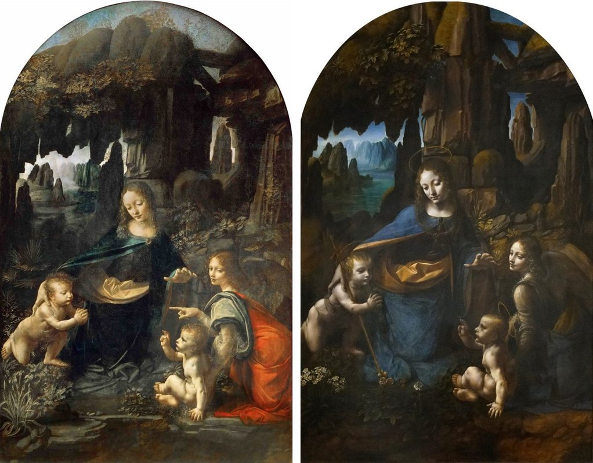
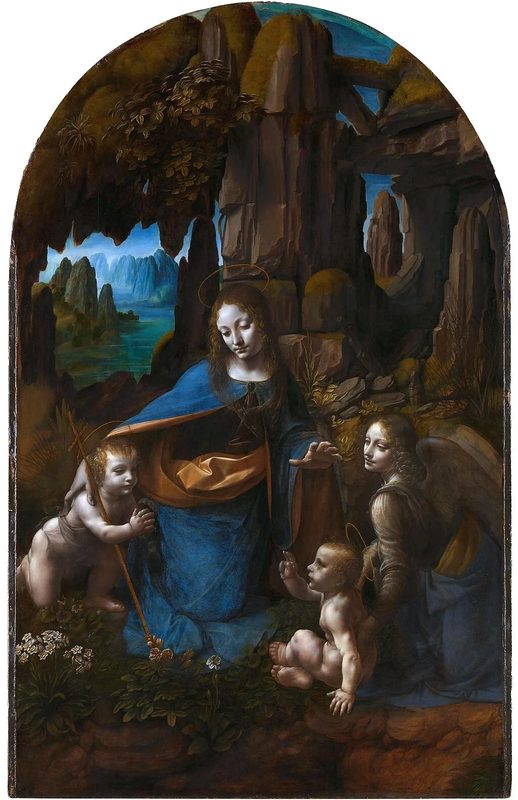
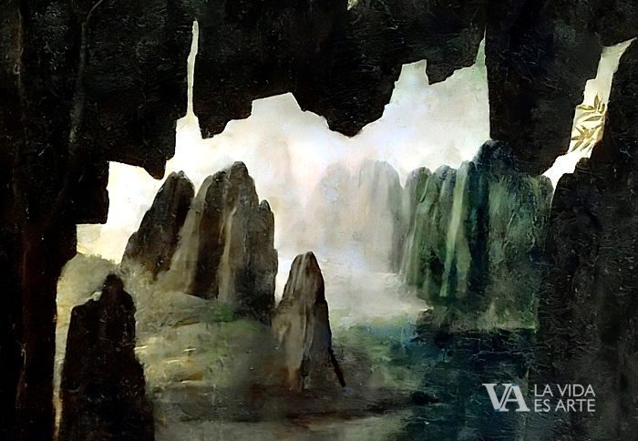
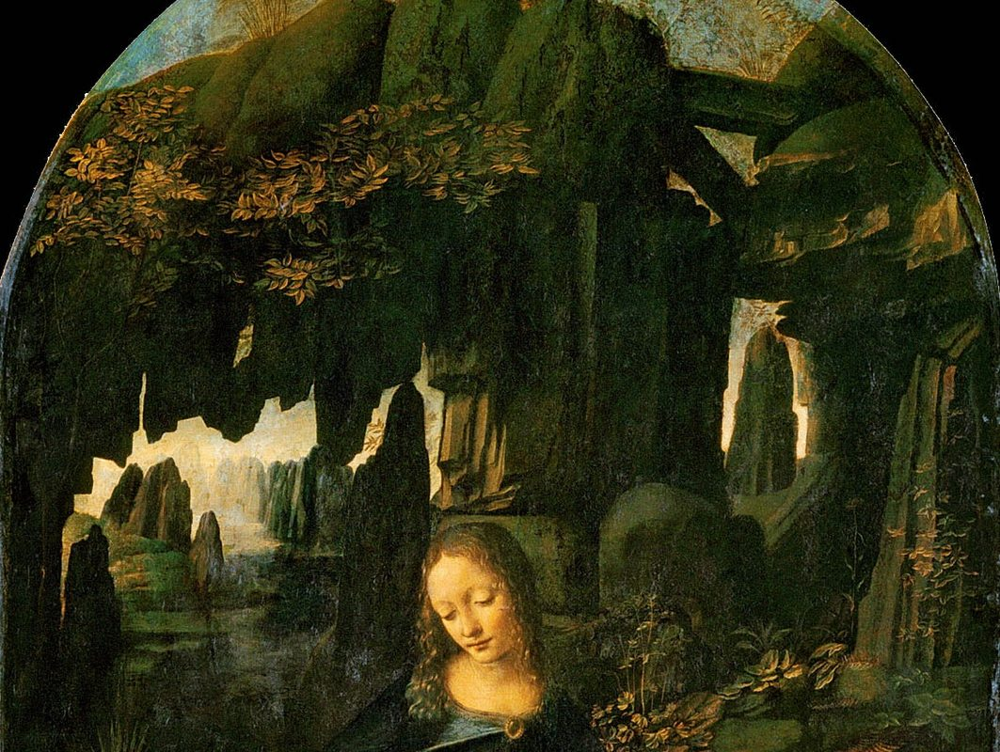

Dos versiones de un mismo misterio

En 1483, la Confraternidad de la Inmaculada Concepción de Milán encargó a Leonardo una gran pintura para la capilla de la iglesia de San Francesco Grande. El contrato especificaba con detalle el programa iconográfico: la Virgen, el Niño Jesús, el arcángel Uriel y el niño Juan Bautista. Lo que Leonardo entregó fue algo completamente distinto a lo esperado.
La primera versión —hoy en el Louvre— fue rechazada por la confraternidad, por razones que aún no están del todo claras. Tal vez la iconografía era demasiado ambigua o simbólicamente oscura para sus patronos. Leonardo tuvo que pintar una segunda versión —hoy en la National Gallery de Londres— más convencional y clara. La primera versión, vendida en el mercado de arte, acabó finalmente en Francia.
«Porque los lugares desiertos se alegrarán, el desierto se regocijará y florecerá como el azafrán.»
Los cuatro personajes y sus gestos

La escena representada es apócrifa: el encuentro de la Sagrada Familia con el niño Juan Bautista durante la huida a Egipto, episodio narrado en el Evangelio de la infancia árabe y en otros textos extrabíblicos. En el centro, María extiende su brazo derecho sobre el niño Juan, que está arrodillado en actitud de adoración ante Jesús. Su mano izquierda, elevada, protege a su vez al propio Jesús. El Niño Jesús bendice a Juan con un gesto adulto y solemne.
Pero el personaje más enigmático es el ángel Uriel, a la derecha: señala con el dedo índice hacia el niño Juan Bautista y, al mismo tiempo, mira directamente al espectador. Es el único personaje que rompe la cuarta pared de la escena. ¿Qué señala? ¿Por qué nos mira? Este gesto ha sido objeto de interpretaciones teológicas, esotéricas y artísticas durante siglos sin llegar a una conclusión definitiva.
La gruta y el sfumato

El fondo de la obra —una gruta rocosa húmeda, de roca volcánica, con agua al fondo y estalactitas— es único en la pintura religiosa del Renacimiento. Leonardo no sitúa a la Virgen en un interior arquitectónico ni en un paisaje abierto sino en las entrañas de la tierra: la naturaleza salvaje se convierte en lugar sagrado.
La técnica del sfumato —la disolución de los contornos en una atmósfera neblinosa, que Leonardo perfeccionó más que nadie— hace que los cuatro personajes parezcan emerger de la oscuridad de la gruta como si fueran apariciones. La versión del Louvre tiene un sfumato más pronunciado y una atmósfera más misteriosa; la de Londres es más clara y de acabado más convencional, con los halos pintados a petición de la confraternidad.
Significado mariano

En esta obra María es la figura central y arquitectónica de la composición: todo orbita alrededor de ella. Su brazo derecho protege a Juan; su mano izquierda protege a Jesús; su cuerpo es el eje en torno al que se organizan los demás. Es la Madre universal, la intercesora que media entre los niños y el mundo, entre lo humano y lo divino.
La elección de una gruta como fondo no es accidental. La gruta es útero, refugio, lugar de nacimiento y de misterio. La Virgen en la gruta evoca simultáneamente el vientre materno —el lugar del milagro de la Encarnación— y el Santo Sepulcro —el lugar del milagro de la Resurrección. En Leonardo, María está siempre en el umbral entre la vida y el misterio.